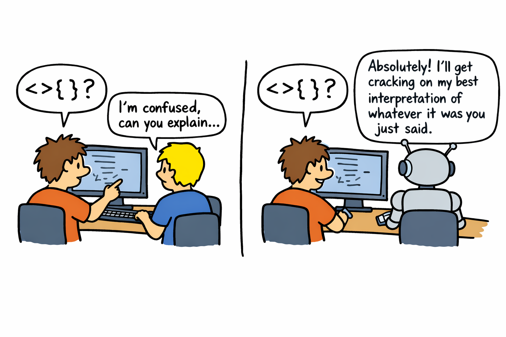

The secret to mastering coding agents? Pair programming.
by Richard Marmorstein - January 15, 2026
← Home
Iron is sharpened by iron, one person sharpens another.
— Proverbs 27:17
Skill issues
Some developers are better than others at using coding agents. I was confused – and a little frustrated – the first time I saw somebody struggle with getting an agent to help them. “Just talk to it like you would onboard another developer to your problem, come on!” I thought.
On reflection I’ve realized this isn’t something you can “just” do. It’s a set of skills that take practice – I just happened to have had this practice already.
I took pretty naturally to coding agents, and I credit one simple thing for this: over the past ten years I have probably averaged something like three hours a week pair programming with colleagues. Pair programming, it turns out, is the perfect way to practice many of the same skills that help you use coding agents well.
In this post, I’ll write a little bit about some specific skills I have gained from pair programming and describe how they transfer to coding agents. These skills are:
- Theory of mind
- Coding in English
- Frontloading the tricky stuff
- Creative dialogue
A quick aside: some people just hate pairing and will always hate pairing. Completely valid – you can stop reading. If you enjoy it or are neutral, read on – let me convince you to do it more!
Theory of mind
Here is an example of a type of prompt I call a “grunt”:
the sync script is broken
Contrast this to a different prompt that provides a lot more direction:
I ran
[command]and got[output], might be a parse error is getting swallowed in the controller? Improve the error experience here and then fix the immediate problem.
Part of using coding agents well is being able to judge when it’s OK to grunt, and when you will get results faster by providing specific direction and context. I think of this as having a good “theory of mind” for the coding agent. What have you already told it? What files has it already read and understood? Does it understand your broader goal here, or only the immediate task? What exactly was in the CLAUDE.md? Should you summarize the way things work, or should you just point it at a couple of files that will give it the gist?
Pair programming forces you to keep track of another mind. What does your pair already know about the problem? What information are they missing? Have they misunderstood something? What is the most time-efficient way to catch them up?
It is much better to practice this skill with a human than an AI assistant. If you haven’t provided enough context, your pair will be confused. If you are overexplaining, your pair will get impatient. And they will tell you these things, either directly in words or indirectly through tone of voice and pattern of speech.
Your AI agent, on the other hand, will happily plug along making guesses about your meaning, reading files willy-nilly from the codebase in the hopes that something there will provide the missing insight and allow it to suss out your intent. Sometimes it will actually halfway succeed, and then unless you’re paying close attention to the trace, you will never become alerted to the fact that you could improve. Even if the agent fails and does the wrong thing, you might chalk it up to a shortcoming in the AI and not your own failure. Thus, using AI won’t always give you the feedback you need to improve at using AI.

Coding in English
Early on in my career, I would often have ideas or code changes that I understood in my head, but struggled to explain them clearly to another person in any other way than just writing out the code myself. I was not very good at “coding in English”, so to speak. (I am still not the best at this: sometimes I give up on the higher forms of expression and try to boss my pair around like they are Vim, not great.)
When you solo program, you translate thought directly into code. You never need to learn how to talk about the edits that you made along the way. Pair programming, on the other hand, absolutely forces you to code in English and develop this ability.
Some of this is vocabulary. There are lots of code actions you can refer to more effectively if you (and your pair) have the right words: “DRY this up”, “inline that function”, “parameterize that expression over X”, “that error is getting swallowed”, “can we reify the Y behavior”, “defunctionalize the continuation here, please”. (Someday I plan to publish a glossary with my favorite software-related vocabulary). After vocabulary, and a lot of repetition, comes fluency.
This skill is very important for using coding agents: summoning the right word at the right time can turn minutes of demonstrating by example into seconds of typing a sentence.
Frontloading the tricky bits
Especially when I’m pairing with a more junior developer, I apply some techniques to try and tackle the interesting, difficult parts of a problem first. This allows me to provide (impose?) maximum direction on what my pair is working on, and reduces the likelihood of somebody asking for rework later when there’s code review.
One such technique is TDD – writing the tests first – and another is the other TDD – writing the types (plus function stubs with type signatures) first. Both techniques allow you to start specifying details about the whole approach sooner than you could if you just dive into implementation. You can also temporarily hardcode data or implementations – there’s a whole art to setting up clever feedback loops from types, tests, logs, debuggers, even agents, in order to tackle things in a different order.
Frontloading the tricky bits can also be useful for agents. Especially having the agent start with type definitions. I do this all the time. I get the results I want much more quickly versus when I just hand the agent the problem and then say “no, I want X”, “no, I want Y”. You want to iterate as much as possible on a smaller artifact that captures the essential details of the whole implementation.
Creative Dialogue
Every once in a while you encounter a problem that requires creativity or careful judgement. There’s a difference between these “hairy” problems and regular problems. With regular problems, once you understand them, the ideas for solving them just come: the solutions are immediately apparent just from the nature of the problem. But for a “hairy” problem, good ideas for solving it don’t just come automatically, you have to exert additional effort to find a good solution: you have to explicitly brainstorm, or talk it out with somebody, or try and write it down, or take a nice relaxing shower to activate the “Default Mode Network” in your brain, or take a walk in nature, or any number of things that can bring new ideas.
There are two aspects to doing this well. One is just recognizing the moment when you are stuck and need to take a step back. This can be tricky solo, if you aren’t talking to anybody, th. It can also be tricky with an AI assistant. AI assistants never really give up – in my experience they keep on pushing trying to fix problems using more and more desperate means. With a human pair, it’s usually pretty easy to tell when you need to take a step back because communication will break down, and you both will begin to get frustrated.
Doing this with an AI agent is possible, and it is very different than doing it with a human pair.
The other skill is actually doing the creative dialogue, directing the conversation in way that encourages lateral thinking and helps you to explore new routes.
You have to take a step back. If I hit a problem like this while pair programming, we will begin to ask questions starting with “why is…” or “why don’t we…” or “what if…” We have to take a step back and actually think creatively.
Creative dialogue with AI is a challenge. AI agents like to go off to work in complete iterations – even in “plan mode” they go try and do all the thinking and maybe give you a little questionnaire after the fact so you feel included – so you have to be explicitly tell them something like “come back with questions, don’t try and solve things yet”. Even after you’ve done this
Being creative with a partner is a different skill than being creative solo. If I want to be creative solo, I , relax, and let my mind explore various trains of thought. Being creative with a partner involves creative dialogue – which is more like attaching my mind like a caboose to my partner’s selected train of thought, and alternating and letting them do the same. To do this well, you have to learn to put aside your preconceptions so you can truly open yourself to ideas from somebody else, but the other hand you need to stay critical so you can apply your own perspective.
You can have creative dialogue with an AI assistant, but you need to explicitly ask. Coding agents have a strong tendency to just go off to try and work in complete iterations. Even in
AI doesn’t provide as good practice as a human, here. When an AI is wrong it will still confidently spout nonsense to you, but when you challenge them, they will sycophantly just yield to your point of view. They can still be still useful partners, they can take your thought to places you could never reach alone, but you have to take them with a grain of salt – and it helps a lot the more experience you have doing this type of discussion live with humans.
Substitutes and Complements
I remember the first time I screenshared and shared my editor with advanced voice mode on ChatGPT desktop, my thought was “it’s so over, guess I should start pair programming with the AI more and stop pairing with humans as much”, but this doesn’t actually hold up at all. For one, as of this writing ChatGPT advanced voice mode is kind of annoying, and for two – to use the economics jargon – AI pairing is a complement to human pairing, not a substitute. In the generative AI age, you should pair program with AI more and with humans more. What you should do less of is solo programming. It’s not so over yet. So go, keep yourself sharp, and ask your teammate to pair.